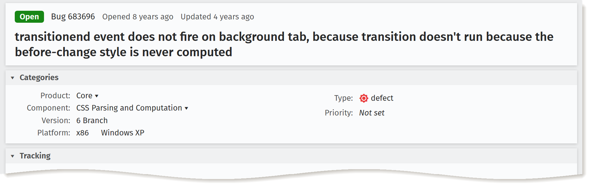
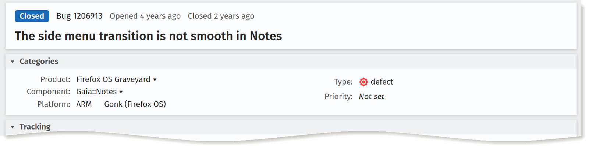
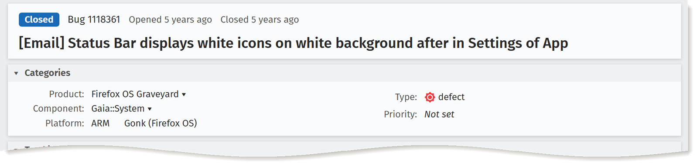
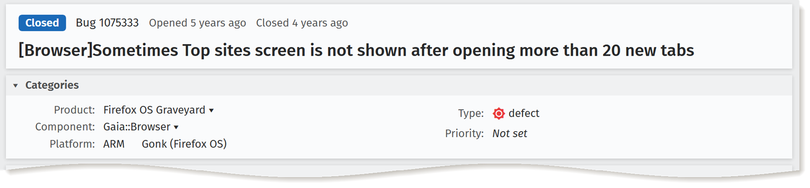
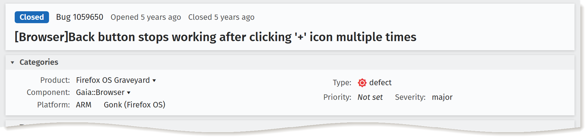
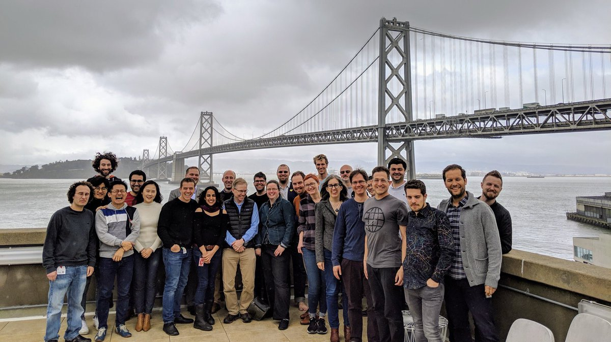
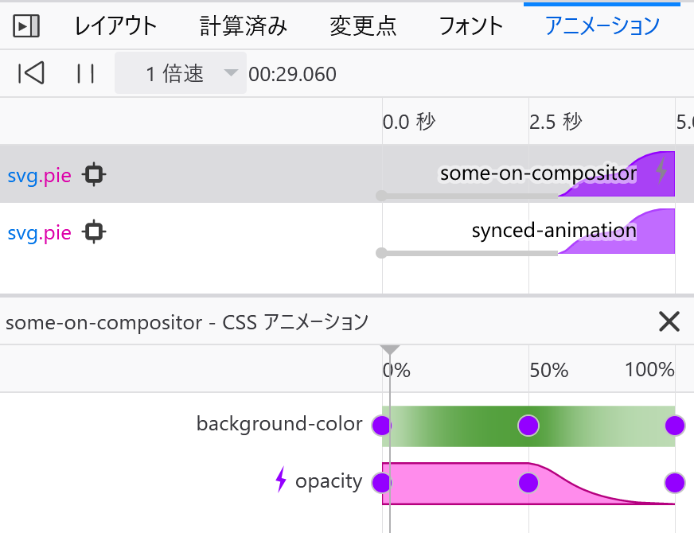
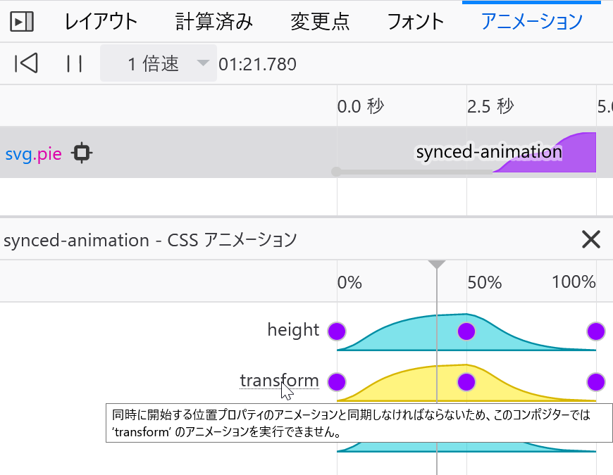
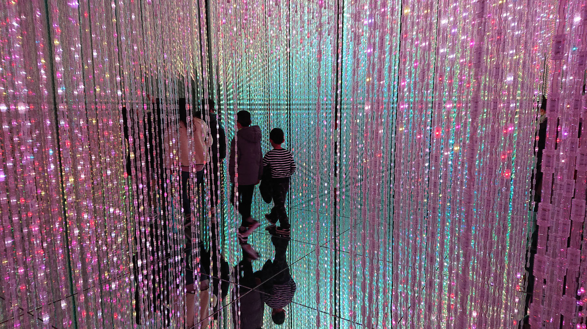

自己紹介


アニメーションが…
- 複雑
- 重くなる
- よくバグる
- イライラさせる
① コマ撮りアニメーションが難しい
.filmstrip {
animation: slide 1s infinite steps(7);
}
@keyframes slide {
to { transform: translate(-700px); }
}
.filmstrip {
/* steps(7) = 7つの変化。最後の変化も含む。 */
animation: slide 1s infinite steps(7);
}
@keyframes slide {
to { transform: translate(-700px); }
}
.filmstrip {
animation: slide 1s infinite steps(6);
}
@keyframes slide {
to { transform: translate(-700px); }
}
.filmstrip {
/* steps(6) = steps(6, end) */
animation: slide 1s infinite steps(6);
}
@keyframes slide {
to { transform: translate(-700px); }
}
.filmstrip {
animation: slide 1s infinite steps(6, start);
}
@keyframes slide {
to { transform: translate(-700px); }
}
.filmstrip {
/* 新しい! jump-none! */
animation: slide 1s infinite steps(7, jump-none);
}
@keyframes slide {
to { transform: translate(-700px); }
}
jump-none, jump-both
 65+
65+
 77+
77+
 x
x
- x
- 〇
② CSS Transitionがよくバグる





1) Transitionが生成されていない
2) Transitionが終わらない
新しいイベント！
transitionrun→ transitionが生成された 🆕
→
transitionendを待ってもオッケー 🙆♂️transitioncancel→ 要素が消えた🗑️ （削除されたり、再生成されたり、
display:noneになったり）→
transitionendを待たない方が良い ❌transitionstart（animationstartと同様）animationcancel（transitioncancelと同様）
transitioncancelたち
- 53+
- 74+
No
animationcancel - Tech Preview
- x
transitionstartのみ - 〇
No
animationcancel
#3: I ❤️ JS
This slide requires support for
Element.animate.
CSS animations from JS
const uniqueKeyframesName = generateUuid();
document.styleSheets[0].insertRule(
`@keyframes ${uniqueKeyframesName} {
from { transform: scale(0) }
95% { transform: scale(${fullSize}) }
to { transform: scale(0) }
}`
);
star.style.animation =
`${uniqueKeyframesName} ${duration}ms ` +
`${delay}ms infinite`;
// 要素がなくなったら、@keyframesも削除してね！
CSS transitions from JS
transitionrun,transitioncancelなど- JSからtransitionを生成させるのが意外と難しい…
Element.animate()を利用して…
star.animate(
[
{ transform: 'scale(0)' },
{ transform: `scale(${fullSize})`, offset: 0.95 },
{ transform: 'scale(0)' },
],
{ easing, duration, delay, iterations: Infinity }
);
Element.animate()を利用して…
const starAnimation = star.animate(
[
{ transform: 'scale(0)' },
{ transform: `scale(${fullSize})`, offset: 0.95 },
{ transform: 'scale(0)' },
],
{ easing, duration, delay, iterations: Infinity }
);
// starAnimation.reverse();
// starAnimation.cancel();
// starAnimation.updatePlaybackRate(0.5);
starAnimation.finished.then(() => { ... });
Element.animate()
- 48+
- 36+
- Tech Preview
- x
- 〇
④ CSS Animationに全体的にイージングを適用するのが難しい
.body, .head {
animation-timing-function: steps(4);
}
.head {
animation-timing-function: steps(4);
}
@keyframes drop-head {
60% { transform: rotate(45deg) }
}
@keyframes drop-head {
0% {
transform: none;
animation-timing-function: steps(4);
}
50% {
transform: rotate(45deg);
animation-timing-function: steps(4);
}
100% { transform: none; }
}
head.animate(
{
// 暗黙の0%/100%キーフレームの機能は
// まだChrome/Firefoxのリリース版に入っていない
transform: ['none', 'rotate(60deg)', 'none'],
offset: [0, 0.6, 1],
},
{
duration: 2000,
iterations: Infinite,
easing: 'steps(4)'
}
);
This slide requires support for
Element.animate.
head.animate(
{
transform: ['none', 'rotate(60deg)', 'none'],
offset: [0, 0.6, 1],
easing: 'ease-in',
},
{
duration: 2000,
iterations: Infinite,
easing: 'steps(4)'
}
);
This slide requires support for
Element.animate.
⑤ 時間ではなく速度でアニメーションの定義ができない
CSS ワーキンググループ

写真
Jen Simmons
早く、スピードベースのアニメーション作ってよ！
Element.getAnimations()
document.addEventListener('transitionrun', evt => {
if (evt.propertyName !== 'transform') {
return;
}
const transition = evt.target
.getAnimations()
.find(animation => animation.transitionProperty === 'transform');
const keyframes = transition.effect.getKeyframes();
const distance = calculateDistance(
keyframes[0].transform,
keyframes[1].transform
);
// 700px/秒で動かす
const duration = (distance / 700) * 1000;
transition.effect.updateTiming({ duration });
// 参考: `transition.updatePlaybackRate()`も良い
});
This slide requires support for
Element.getAnimations.
Element.getAnimations()
- Nightly
- Canary
- Tech Preview
- x
- Canary
⑥ CSS Transitionに中間点は加えられない
rgb(255, 0, 0)
→
rgb(128, 64, 0)
→
rgb(0, 128, 0)
😧
Color #1:
Color #2:
rgb(255, 0, 0)
→
rgb(255, 255, 0)
→
rgb(0, 128, 0)
🤔
hsl(0, 100%, 50%)
→
hsl(60, 100%, 37.5%)
→
hsl(120, 100%, 25%)
❓
CSS ワーキンググループ
写真
Jen Simmons
早く、補間機能を増やしてよ！
CSSTransition.setKeyframes()
document.addEventListener('transitionrun', evt => {
if (evt.propertyName !== 'fill') {
return;
}
const transition = evt.target
.getAnimations()
.find(animation => animation.transitionProperty === 'fill');
const keyframes = transition.effect.getKeyframes();
const hslKeyframes = generateHslKeyframes(
keyframes[0].fill,
keyframes[1].fill
);
transition.effect.setKeyframes(hslKeyframes);
});
Color #1:
Color #2:
This slide requires support for
Element.getAnimations.
CSSTransition.setKeyframes() (Element.getAnimations)
- Nightly
- Canary
- Tech Preview
- x
- Canary
⑦ 飛び交いたい
This slide requires support for
offset-path.
offset-path
.goose {
offset-path: path('M100 100...');
animation: fly 10s linear infinite;
}
@keyframes fly {
to { offset-distance: 100%; }
}
offset-path
- 72+
- 55+
(⚠️
offset-anchorは設定で無効) - x
- x
- 〇
(⚠️
offset-anchorは設定で無効)
⑧ パフォーマンスは難しい
transform and opacity
This slide requires support for
offset-path.
Firefox Animation DevTools


⑨ アニメーションで頭痛になる
アニメーション病

頭痛、目まい、吐き気、てんかんなど
prefers-reduced-motion: reduce | no-preference
div {
animation: ...
transition: ...
}
@media (prefers-reduced-motion: reduce) {
* {
animation-name: none !important;
transition-property: none !important;
/*
* 例えばtransitionイベントが必要なら…
* transition-duration: 0.01s !important;
* transition-delay: 0s !important;
*/
}
}
From JS…
// ブラウザー対応を確認
if (!('animate' in elem)) {
return;
}
// ユーザー対応を確認
if (matchMedia('(prefers-reduced-motion)').matches) {
return;
}
// アニメーションしよう～
prefers-reduced-motion
- 64+
- 74+
- 10.1+
- x
- 〇